How NyayaAI reached 0.93 Recall@5
Building a citation-grounded RAG assistant for the Constitution of India: structure-aware chunking, hybrid search with reranking, and evaluation gates that decide what ships.
Legal questions punish a RAG system that is only roughly right. If someone asks about the right to education, an answer that cites Article 21 instead of Article 21-A is wrong, however fluent it sounds. So I built NyayaAI around three ideas: measure retrieval, handle failure explicitly, and attribute every claim to an Article.

01Chunk by the document's own structure
Fixed-size windows cut Articles in half and mix neighbouring provisions. Instead, NyayaAI makes one chunk per Article and splits only long Articles, at clause boundaries. All 506 of 506 Articles in the Contents list are found, with no duplicates or gaps, and no chunk exceeds the 1,024-token limit. A full ingest takes about two minutes, and re-ingesting the same PDF is a no-op.
The real PDF had its share of surprises, and each fix is pinned by a test:
- Headings are not bold, so they are detected by centred position.
- The Contents say
243-Iwhile the body says243I, so both are normalised. - Part VII is omitted entirely, so Article 238 gets a stub chunk ("Omitted." plus the amendment note) rather than silently disappearing.
- A footnote is numbered
2.twice (a typo), so footnotes are numbered by position.
02Hybrid search, then rerank
Each query runs a dense vector search (bge-m3 embeddings in pgvector) and a Postgres full-text search. The two lists are fused with Reciprocal Rank Fusion, and a cross-encoder (bge-reranker-v2-m3) reorders the candidates. Exact lookups like "Art. 21-A" are pinned, so they never depend on similarity scores.
The ablation shows which piece earns its keep:
| Variant | Recall@5 | MRR@10 | nDCG@5 | Cand. recall@15 |
|---|---|---|---|---|
| Dense only | 0.889 | 0.846 | 0.802 | 0.972 |
| Full-text only | 0.625 | 0.563 | 0.516 | 0.486 |
| Hybrid (RRF) | 0.778 | 0.707 | 0.664 | 0.875 |
| Hybrid + rerank (current) | 0.931 | 0.931 | 0.877 | 0.875 |
| Dense + rerank | 0.958 | 0.962 | 0.911 | 0.972 |
The reranker adds the most, taking Recall@5 from 0.778 to 0.931. The honest surprise is the last row: on this set, dense + rerank beats the current hybrid setup. Whether to keep the full-text leg is an open decision, recorded in an ADR rather than settled by gut feel.
03Evaluation gates, not vibes
A golden Q&A set with a dev/test split drives everything. make eval-retrieval reports Recall@k, MRR, nDCG, candidate recall and latency, and the gates block merges:
| Metric | Value | Gate | Status |
|---|---|---|---|
| Recall@5 | 0.931 | ≥ 0.90 | pass |
| MRR@10 | 0.931 | ≥ 0.75 | pass |
| Hit@1 (Article lookups) | 1.000 | = 1.00 | pass |
| Retrieval latency p95 | 95 ms | ≤ 300 ms | pass |
| Candidate recall@15 | 0.875 | ≥ 0.95 | open |
| Rerank latency p95 | 4,846 ms | ≤ 800 ms | open |
Two gates still fail, so the baseline isn't promoted yet. Writing that down matters more than a headline number. The misses are instructive too: "supreme commander of the armed forces" misses Article 53 because the text says "supreme command of the Defence Forces", and Article 300A gets crowded out by 31A–31D.
04One router call, one answer call
NyayaAI is a fixed LangGraph pipeline, not an agent. A small LLM rewrites the question, extracts Article references and picks a route (article_lookup, simple, conceptual, multi_part, or a canned reply for ambiguous, out-of-scope and chit-chat messages). A large LLM then answers only from the retrieved, numbered excerpts. Conceptual questions use a HyDE passage for the vector search, and multi-part questions run one search per sub-question.
05Guards that keep answers honest
- Hallucinated citations: any
[Art. N]that isn't among the retrieved chunks is stripped and logged. - Nothing found: no answer LLM call at all, just a "not covered" reply.
- Weak match: the prompt is told retrieval is weak and must say so.
- Prompt injection: excerpts and user text are treated as data; "ignore your rules" is routed to out-of-scope.
- Provider failure: one retry, then a fallback model, then a clean
LLM_UNAVAILABLE. Every attempt is one row inllm_calls, and every stage logs the samerequest_id.
Takeaway: the biggest gains came from the reranker and from respecting the document's structure. The most useful habit was letting the evaluation harness, not intuition, decide what stays.